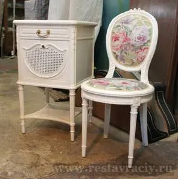
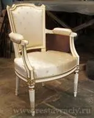
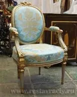
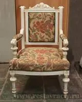
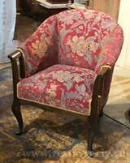
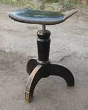
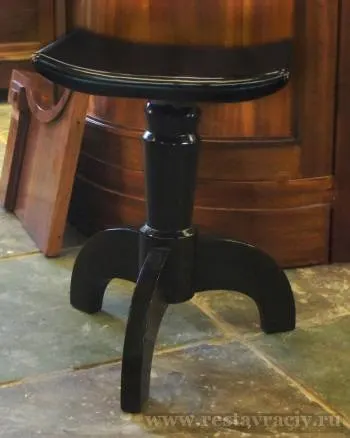
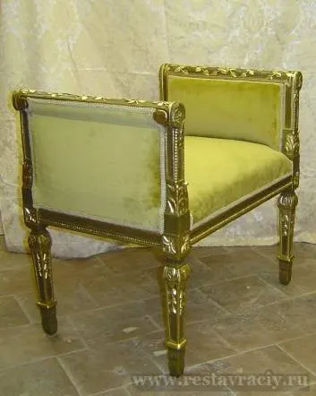
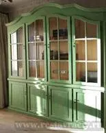

Цены
Цена покраски мебели из дерева
Стоимость зависит от того, чем дерево покрывали прежде и какую поверхность предстоит получить. Подбор цвета и подготовку основания обсуждаем до отделки.


Примеры окраски
В статье мастерской для обеденного стола приведён диапазон 10 000–15 000 ₽. Для небольшого буфета — 20 000–30 000 ₽. Это примеры определённой отделки.
Отдельно описан письменный стол с кожаной вставкой. Стоимость зависит от подготовки поверхности и от того, удастся ли сохранить старую кожу.
В материале мастерской
Фотографии и детали



Открыть снимок у мастерской


Открыть снимок у мастерской


Открыть снимок у мастерской


Открыть снимок у мастерской


Открыть снимок у мастерской


Открыть снимок у мастерской


Открыть снимок у мастерской


Открыть снимок у мастерской
Есть похожая вещь?
Подберите ракурсы для предварительной оценки.